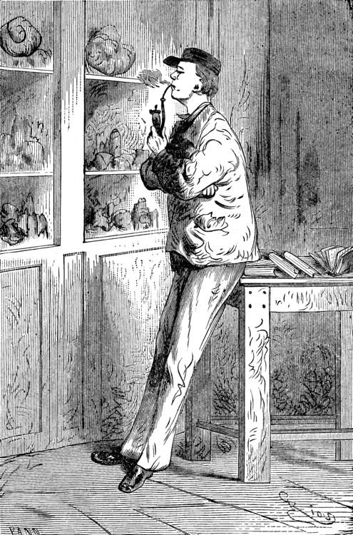
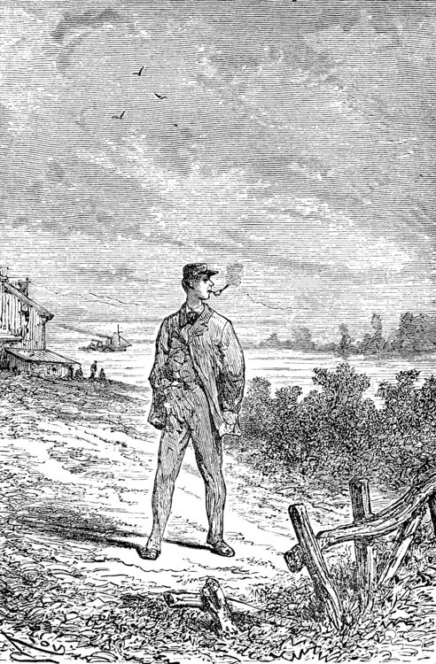
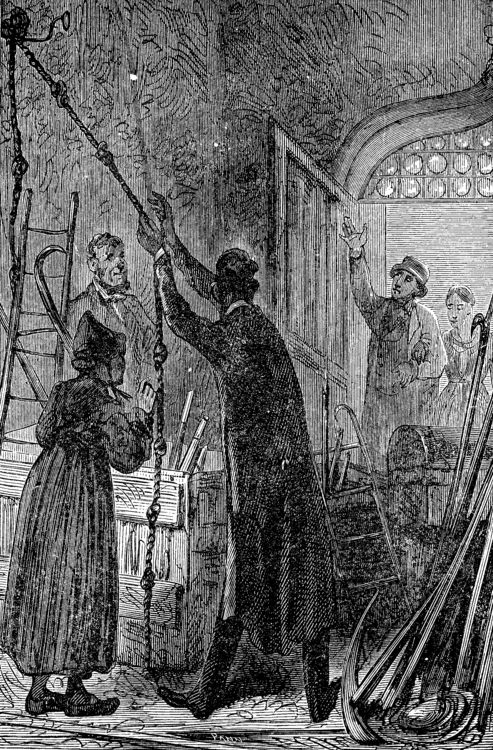

Want to listen the story?
That study of his was a museum, and nothing else. Specimens ofeverything known in mineralogy lay there in their places in perfectorder, and correctly named, divided into inflammable, metallic, andlithoid minerals. How well I knew all these bits of science! Many a time, instead ofenjoying the company of lads of my own age, I had preferred dustingthese graphites, anthracites, coals, lignites, and peats! And therewere bitumens, resins, organic salts, to be protected from the leastgrain of dust; and metals, from iron to gold, metals whose currentvalue altogether disappeared in the presence of the republicanequality of scientific specimens; and stones too, enough to rebuildentirely the house in Königstrasse, even with a handsome additionalroom, which would have suited me admirably.  But on entering this study now I thought of none of all thesewonders; my uncle alone filled my thoughts. He had thrown himselfinto a velvet easy-chair, and was grasping between his hands a bookover which he bent, pondering with intense admiration. "Here's a remarkable book! What a wonderful book!" he was exclaiming. These ejaculations brought to my mind the fact that my uncle wasliable to occasional fits of bibliomania; but no old book had anyvalue in his eyes unless it had the virtue of being nowhere else tobe found, or, at any rate, of being illegible. "Well, now; don't you see it yet? Why I have got a pricelesstreasure, that I found his morning, in rummaging in old Hevelius'sshop, the Jew." "Magnificent!" I replied, with a good imitation of enthusiasm. What was the good of all this fuss about an old quarto, bound inrough calf, a yellow, faded volume, with a ragged seal depending fromit? But for all that there was no lull yet in the admiring exclamationsof the Professor. "See," he went on, both asking the questions and supplying theanswers. "Isn't it a beauty? Yes; splendid! Did you ever see such abinding? Doesn't the book open easily? Yes; it stops open anywhere. But does it shut equally well? Yes; for the binding and the leavesd look at its back, after seven hundred years. Why, Bozerian,Closs, or Purgold might have been proud of such a binding!" While rapidly making these comments my uncle kept opening andshutting the old tome. I really could do no less than ask a questionabout its contents, although I did not feel the slightest interest. "And what is the title of this marvellous work?" I asked with anaffected eagerness which he must have been very blind not to seethrough. "This work," replied my uncle, firing up with renewed enthusiasm,"this work is the Heims Kringla of Snorre Turlleson, the most famousIcelandic author of the twelfth century! It is the chronicle of theNorwegian princes who ruled in Iceland." "Indeed;" I cried, keeping up wonderfully, "of course it is a Germantranslation?" "What!" sharply replied the Professor, "a translation! What should Ido with a translation? This _is_ the Icelandic original, in themagnificent idiomatic vernacular, which is both rich and simple, andadmits of an infinite variety of grammatical combinations and verbalmodifications."  "Like German." I happily ventured. "Yes." replied my uncle, shrugging his shoulders; "but, in additionto all this, the Icelandic has three numbers like the Greek, andirregular declensions of nouns proper like the Latin." "Ah!" said I, a little moved out of my indifference; "and is the typegood?" "Type! What do you mean by talking of type, wretched Axel? Type! Doyou take it for a printed book, you ignorant fool? It is amanuscript, a Runic manuscript." "Runic?" "Yes. Do you want me to explain what that is?" "Of course not," I replied in the tone of an injured man. But myuncle persevered, and told me, against my will, of many things Icared nothing about. "Runic characters were in use in Iceland in former ages. They wereinvented, it is said, by Odin himself. Look there, and wonder,impious young man, and admire these letters, the invention of theScandinavian god!" Well, well! not knowing what to say, I was going to prostrate myselfbefore this wonderful book, a way of answering equally pleasing togods and kings, and which has the advantage of never giving them anyembarrassment, when a little incident happened to divert conversationinto another channel. This was the appearance of a dirty slip of parchment, which slippedout of the volume and fell upon the floor. My uncle pounced upon this shred with incredible avidity. An olddocument, enclosed an immemorial time within the folds of this oldbook, had for him an immeasurable value. "What's this?" he cried. And he laid out upon the table a piece of parchment, five inches bythree, and along which were traced certain mysterious characters. Here is the exact facsimile. I think it important to let thesestrange signs be publicly known, for they were the means of drawingon Professor Liedenbrock and his nephew to undertake the mostwonderful expedition of the nineteenth century. [Runic glyphs occur here] The Professor mused a few moments over this series of characters;then raising his spectacles he pronounced: "These are Runic letters; they are exactly like those of themanuscript of Snorre Turlleson. But, what on earth is their meaning?" Runic letters appearing to my mind to be an invention of the learnedto mystify this poor world, I was not sorry to see my uncle sufferingthe pangs of mystification. At least, so it seemed to me, judgingfrom his fingers, which were beginning to work with terrible energy. "It is certainly old Icelandic," he muttered between his teeth. And Professor Liedenbrock must have known, for he was acknowledged tobe quite a polyglot. Not that he could speak fluently in the twothousand languages and twelve thousand dialects which are spoken onthe earth, but he knew at least his share of them.  So he was going, in the presence of this difficulty, to give way toall the impetuosity of his character, and I was preparing for aviolent outbreak, when two o'clock struck by the little timepieceover the fireplace. At that moment our good housekeeper Martha opened the study door,saying: "Dinner is ready!" I am afraid he sent that soup to where it would boil away to nothing,and Martha took to her heels for safety. I followed her, and hardlyknowing how I got there I found myself seated in my usual place. I waited a few minutes. No Professor came. Never within myremembrance had he missed the important ceremonial of dinner. And yetwhat a good dinner it was! There was parsley soup, an omelette of hamgarnished with spiced sorrel, a fillet of veal with compote ofprunes; for dessert, crystallised fruit; the whole washed down withsweet Moselle. All this my uncle was going to sacrifice to a bit of old parchment.As an affectionate and attentive nephew I considered it my duty toeat for him as well as for myself, which I did conscientiously. "I have never known such a thing," said Martha. "M. Liedenbrock isnot at table!" "Who could have believed it?" I said, with my mouth full. "Something serious is going to happen," said the servant, shaking herhead. My opinion was, that nothing more serious would happen than an awfulscene when my uncle should have discovered that his dinner wasdevoured. I had come to the last of the fruit when a very loud voicetore me away from the pleasures of my dessert. With one spring Ibounded out of the dining-room into the study.